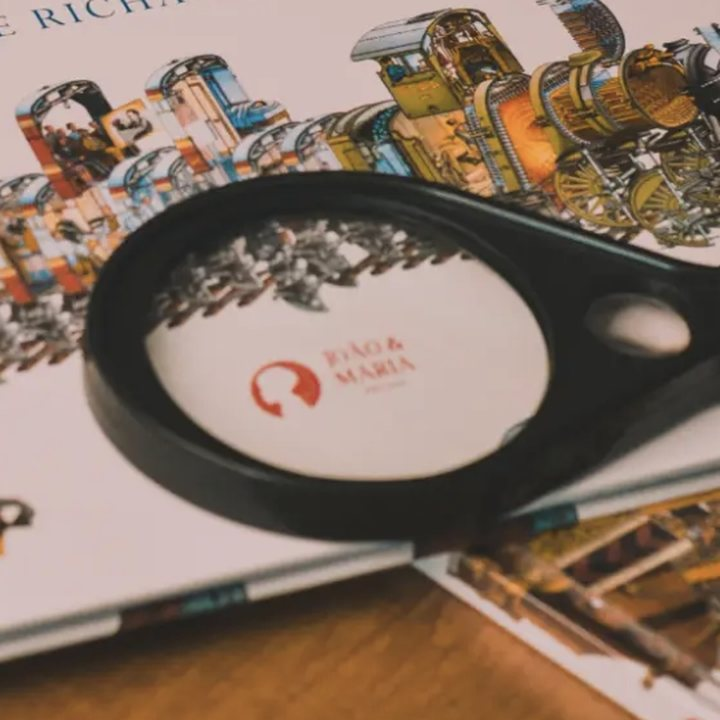
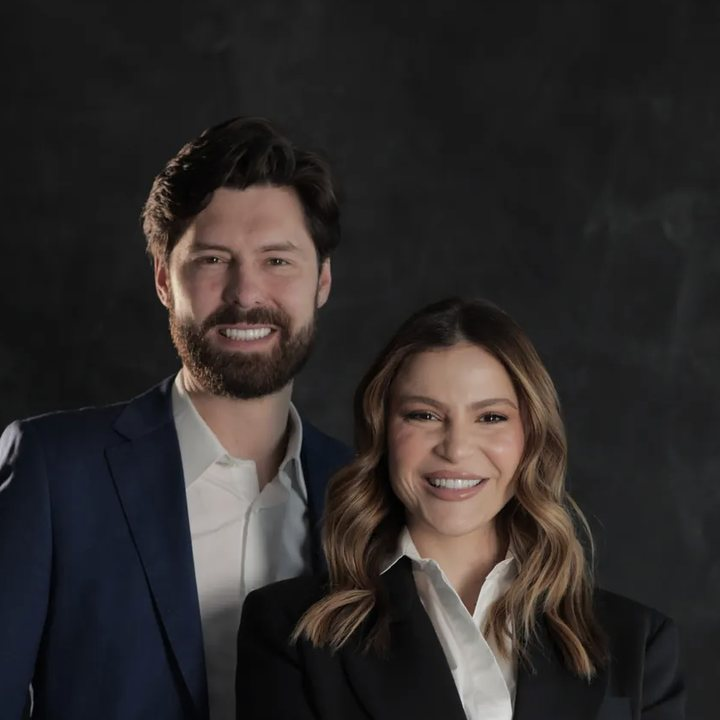

Gente inteligente fazendo trabalho ambicioso.
Estratégia, criação e performance para quem tem substância — e quer levá-la mais longe.
Conversar com a gente ↗
ou role a tela. a gente explica no caminho.
Ofício × produção em série
lá fora
- template
- linha de montagem
- dancinha
- volume sem substância
- prompt como pensamento
- expert-ator
- copia e cola
- “ganhe dinheiro rápido”
aqui dentro
- inteligência
- autoria
- ambição
- curiosidade
- estratégia
- domínio de ofício
- responsabilidade
Posicionamento, linha editorial, campanha, tráfego. Pensados na mesma mesa — não em departamentos.
Um braço de receita digital
Seu conhecimento vira um negócio digital — sem virar conteúdo descartável.
Conversar sobre isso ↗Escalar o que já vende
Crescimento guiado por hipótese, não por fórmula.
Conversar sobre isso ↗Uma marca que ninguém confunde
Posição clara e uma linha editorial que sustenta essa posição.
Conversar sobre isso ↗Gente que já trabalhou com a gente.

+400%em 2 anos
À frente da Demetra
Caíque Vendramini
estratégia · performance · lançamentos
Raíssa Prioste
posicionamento · linguagem · cultura
“Não é a minha opinião contra a sua. É nós dois contra o problema.”
Não fabricamos autoridades.
Trabalhamos com quem já tem algo a ensinar — no mundo real ou no digital — e quer levar isso mais longe.
Chamar no WhatsApp ↗
a primeira conversa serve para entender se faz sentido. para os dois lados.
do nosso substack
A gente também pensa por escrito.
 caíque vendramini
A exceção fundamental em um mercado cheio de garotos de papel
ler no substack ↗
raíssa prioste
Repertório não é shape de verão
ler no substack ↗
caíque vendramini
A exceção fundamental em um mercado cheio de garotos de papel
ler no substack ↗
raíssa prioste
Repertório não é shape de verão
ler no substack ↗
 caíque vendramini
A história de como faturamos mais de 1MM com uma campanha inédita de escrita criativa
ler no substack ↗
caíque vendramini
A história de como faturamos mais de 1MM com uma campanha inédita de escrita criativa
ler no substack ↗
 caíque vendramini
O timing e o modelo de venda certos que retornaram para o produto 12x o valor investido
ler no substack ↗
caíque vendramini
O timing e o modelo de venda certos que retornaram para o produto 12x o valor investido
ler no substack ↗